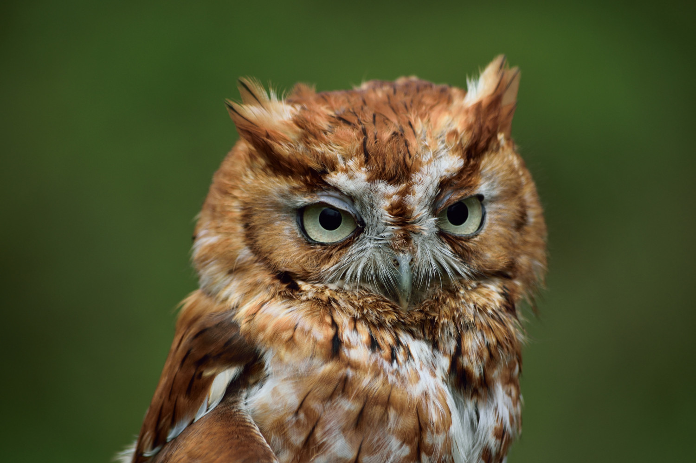
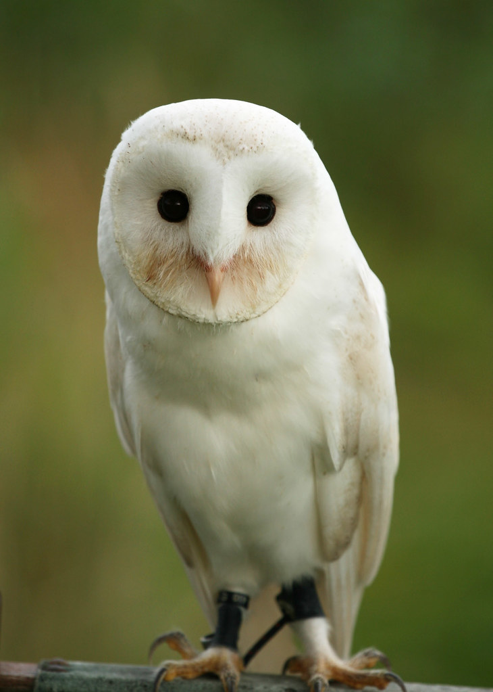

Owls are a type of bird. Their size ranges from five to 28 inches. Their weight can be anywhere from 1.5 ounces to nine pounds. There are 200 different species of owls.
Owl's scientific name is Strigiformes. They are carnivores and their diet can consist of rodents and insects. Their average lifespan is five to 12 years. Owls can be found in almost every type of enviornment and habitat, including the desert and the arctic tundra.
 | Header 1 | Header 2 |
|---|---|
| Row 1, Cell 1 | Row 1, Cell 2 |
| Row 2, Cell 1 | Row 2, Cell 2 |
| Row 3, Cell 1 | Row 3, Cell 2 |